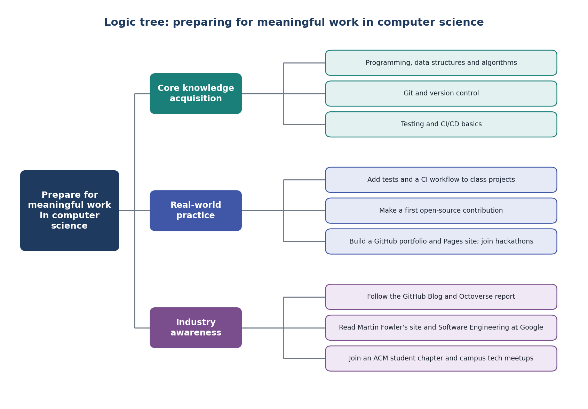

Jack Mikulski, I101 Module 1 Project
Automated testing means writing code whose only job is to check other code, so a test suite can run hundreds of checks in seconds instead of someone testing by hand. Continuous integration (CI) builds on this idea. Developers commit often to a shared repository, and every commit triggers an automatic build and test run that shows whether anything failed. On GitHub, the results show up right on the pull request. Committing more often means errors get caught sooner and there's less code to dig through to find a bug. For me, this changes what I need to learn. Writing code that works isn't enough anymore. I also need to write code that's easy to test, write good tests, and set up the pipeline that runs them.
Open source means developers share their code so anyone can use, fix, or improve it, and GitHub lets anyone suggest a change through a pull request. GitHub's Open Source Guides were made to help people learn how to contribute to and run open-source projects, and they point out that you can help with documentation, design, or answering questions aswell. Package managers like npm and PyPI let a developer add a library with one command instead of building it from scratch, which is a network effect. Every new contributor makes the ecosystem more useful for everyone. The two techniques also connect, since researchers have studied the usage, costs, and benefits of continuous integration in open-source projects. For me, this means teamwork skills matter as much as coding skills, like reading other people's code and writing clear documentation.
